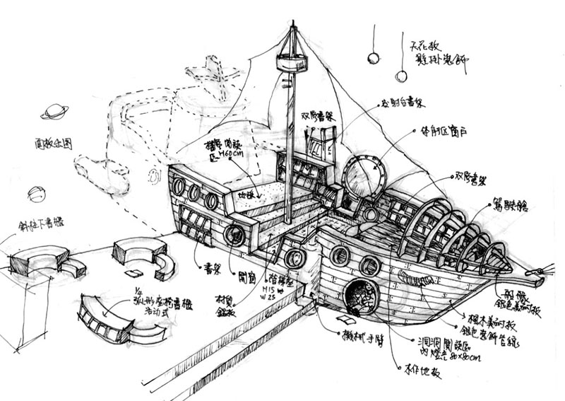

Chang-Ming，畢業於東海大學美術學系，並在美國麻省藝術暨設計學院取得設計碩士學位。他的專長領域包括設計思考、訊息視覺化設計、多媒體設計、數位出版、文創商品設計和公共藝術，熟用AI 生成、Adobe studio系列等設計軟體運用，並取得多項證照，例如:Microsoft AI-900、Adobe Dreamweaver、Animate、Smart Apps，以及APP Inventor 2等證照。
在設計實務方面，曾擔任多家公司的設計顧問，包括信誼基金會、國登廣告設計有限公司、深圳東貝餐飲文化及宜山國際有限公司等。工作上執行了多個公共藝術項目，並在國內外舉辦多次個展，如「風之藝」和「新的一天」公共藝術環境設計個展等。
Chang-Ming的出版及文章發表也相當豐富，涵蓋公共藝術視覺設計、在地休閒與社區公共藝術等多個領域，並多次獲得設計獎項，如澎湖烏崁自來水廠公共藝術設置作品首獎、彰化縣員林地方法院公共藝術首獎及新北市林口區公有市場16A公共藝術首獎等。
他還接受多項民間相關機構的空間設計案，以及VIS委託設計，信誼基金會、上誼出版社、以及深圳東貝餐飲VIS等，進行空間規劃、平面及產品設計，如:台大兒童醫療大樓一樓家庭資源中心、臺北市南湖高中，以及龍門國中的整體意象設計等。chang-ming的設計理念和實踐不僅在學術界和設計業界獲得認可，並且對公共藝術和社區發展有其的影響。
關注Chang-ming讓我知道我能為社會服務什麼?
